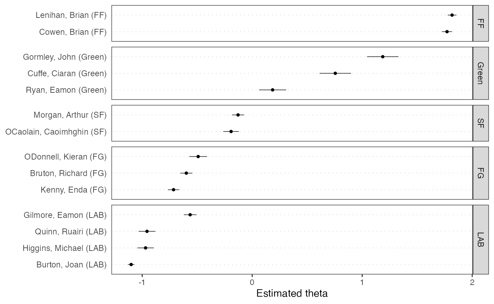

本ページはQuick Start Guideの日本語訳であり，英語のテキスト分析を通じてquantedaの基本的な使い方を説明する．日本語の分析法に関しては，以下のページを参照．
パッケージのインストール
quantedaはCRANからインストールできる．GUIのRパッケージインストーラを使用してインストールするか，次のコマンドを実行する．
install.packages("quanteda")
GitHubから最新の開発バージョンをインストールする方法については，https://github.com/quanteda/quanteda を参照．
インストールが推奨されるパッケージ
quantedaには連携して機能を拡張する一連のパッケージがあり，それらをインストールすることが推奨される．
readtext：多くの入力形式からテキストデータをRに簡単に読み込むパッケージ
spacyr：PythonのspaCyライブラリを使用した自然言語解析のためのパッケージで，品詞タグ付け，固有表現抽出，および係り受け関係の解析などができる
-
quanteda.corpora：quantedaの本記事内の説明で使用する追加のテキストデータ
devtools::install_github("quanteda/quanteda.corpora")
-
LIWCalike: Linguistic Inquiry and Word Count (LIWC) アプローチによるテキスト分析のR実装
devtools::install_github("kbenoit/quanteda.dictionaries")
コーパスの作成
まず，quantedaを読み込んで，パッケージの関数とデータにアクセスできるようにする．
library(quanteda)
利用可能なコーパス
quantedaにはテキストを読み込むためのシンプルで強力なパッケージ，readtextがあります．このパッケージのreadtext()は，ローカス・ストレージやインターネットからファイル読み込み，corpus()にデータ・フレームを返す．
readtext()で利用可能なファイルやデータの形式:
- テキスト（
.txt）ファイル - コンマ区切り値（
.csv）ファイル - XML形式のデータ
- JSON形式のFacebook APIのデータ
- JSON形式のTwitter APIのデータ
- 一般的なJSONデータ
quantedaのコーパスを生成する関数である corpus()は，以下の種類のデータを読み込むことができる．
- 文字列ベクトル（例：readtext以外のツールを使用して読み込んだテキスト）
-
tmパッケージの
VCorpusコーパスオブジェクト - テキスト列と他の文書に対応したメタデータを含むデータ・フレーム
文字列からコーパスを作成
コーパスを作成する最も簡単な方法は，corpus()を用いて，すでにRに読み込まれた文字列ベクトル作成することである．文字列ベクトルをRに取り込む方法はさまざまなので，高度なRユーザーは，コーパスをいろいろな方法で作り出せる．
次の例では，quantedaパッケージに含まれているイギリスの政党が2010年の総選挙のために発行したマニフェストのテキストデータ（data_char_ukimmig2010）からコーパスを作成している．
## Corpus consisting of 9 documents, showing 9 documents:
##
## Text Types Tokens Sentences
## BNP 1125 3280 88
## Coalition 142 260 4
## Conservative 251 499 15
## Greens 322 677 21
## Labour 298 680 29
## LibDem 251 483 14
## PC 77 114 5
## SNP 88 134 4
## UKIP 346 722 27コーパスを作成したあとでも，docvarsを用いると，必要に応じて文書に対応した変数をこのコーパスに追加することができる．
たとえば，Rのnames()関数を使って文字ベクトル（data_char_ukimmig2010）の名前を取得し，これを文書変数（docvar()）に追加することができる．
docvars(corp_uk, "Party") <- names(data_char_ukimmig2010) docvars(corp_uk, "Year") <- 2010 summary(corp_uk)
## Corpus consisting of 9 documents, showing 9 documents:
##
## Text Types Tokens Sentences Party Year
## BNP 1125 3280 88 BNP 2010
## Coalition 142 260 4 Coalition 2010
## Conservative 251 499 15 Conservative 2010
## Greens 322 677 21 Greens 2010
## Labour 298 680 29 Labour 2010
## LibDem 251 483 14 LibDem 2010
## PC 77 114 5 PC 2010
## SNP 88 134 4 SNP 2010
## UKIP 346 722 27 UKIP 2010readtextパッケージを用いたファイルの読み込み
require(readtext) # Twitter json dat_json <- readtext("~/Dropbox/QUANTESS/social media/zombies/tweets.json") corp_twitter <- corpus(dat_json) summary(corp_twitter, 5) # generic json - needs a textfield specifier dat_sotu <- readtext("~/Dropbox/QUANTESS/Manuscripts/collocations/Corpora/sotu/sotu.json", textfield = "text") summary(corpus(dat_sotu), 5) # text file dat_txtone <- readtext("~/Dropbox/QUANTESS/corpora/project_gutenberg/pg2701.txt", cache = FALSE) summary(corpus(dat_txtone), 5) # multiple text files dat_txtmultiple1 <- readtext("~/Dropbox/QUANTESS/corpora/inaugural/*.txt", cache = FALSE) summary(corpus(dat_txtmultiple1), 5) # multiple text files with docvars from filenames dat_txtmultiple2 <- readtext("~/Dropbox/QUANTESS/corpora/inaugural/*.txt", docvarsfrom = "filenames", sep = "-", docvarnames = c("Year", "President")) summary(corpus(dat_txtmultiple2), 5) # XML data dat_xml <- readtext("~/Dropbox/QUANTESS/quanteda_working_files/xmlData/plant_catalog.xml", textfield = "COMMON") summary(corpus(dat_xml), 5) # csv file write.csv(data.frame(inaug_speech = texts(data_corpus_inaugural), docvars(data_corpus_inaugural)), file = "/tmp/inaug_texts.csv", row.names = FALSE) dat_csv <- readtext("/tmp/inaug_texts.csv", textfield = "inaug_speech") summary(corpus(dat_csv), 5)
コーパスオブジェクトの使い方
コーパスの原理
quantedaのコーパスは，元の文書をユニコード（UTF-8）に変換し，文書に対するメタデータと一緒に格納しすることで、ステミングや句読点の削除などの処理よって変更されないテキストデータの静的な保管庫になるように設計されている．これによって，コーパスから文書を抽出して新しいオブジェクトを作成した後でも，コーパスには元のデータが残り，別の分析を，同じコーパスを用いて行うことができる．
コーパスから文書を取り出すためには，texts()と呼ばれる関数を使用する．
texts(data_corpus_inaugural)[2]
## 1793-Washington
## "Fellow citizens, I am again called upon by the voice of my country to execute the functions of its Chief Magistrate. When the occasion proper for it shall arrive, I shall endeavor to express the high sense I entertain of this distinguished honor, and of the confidence which has been reposed in me by the people of united America.\n\nPrevious to the execution of any official act of the President the Constitution requires an oath of office. This oath I am now about to take, and in your presence: That if it shall be found during my administration of the Government I have in any instance violated willingly or knowingly the injunctions thereof, I may (besides incurring constitutional punishment) be subject to the upbraidings of all who are now witnesses of the present solemn ceremony.\n\n "summary()により，コーパス内のテキストの要約を行うことができる．
data(data_corpus_irishbudget2010, package = "quanteda.textmodels") summary(data_corpus_irishbudget2010)
## Corpus consisting of 14 documents, showing 14 documents:
##
## Text Types Tokens Sentences year debate number foren
## Lenihan, Brian (FF) 1953 8641 374 2010 BUDGET 01 Brian
## Bruton, Richard (FG) 1040 4446 217 2010 BUDGET 02 Richard
## Burton, Joan (LAB) 1624 6393 307 2010 BUDGET 03 Joan
## Morgan, Arthur (SF) 1595 7107 343 2010 BUDGET 04 Arthur
## Cowen, Brian (FF) 1629 6599 250 2010 BUDGET 05 Brian
## Kenny, Enda (FG) 1148 4232 153 2010 BUDGET 06 Enda
## ODonnell, Kieran (FG) 678 2297 133 2010 BUDGET 07 Kieran
## Gilmore, Eamon (LAB) 1181 4176 201 2010 BUDGET 08 Eamon
## Higgins, Michael (LAB) 488 1286 44 2010 BUDGET 09 Michael
## Quinn, Ruairi (LAB) 439 1284 59 2010 BUDGET 10 Ruairi
## Gormley, John (Green) 401 1030 49 2010 BUDGET 11 John
## Ryan, Eamon (Green) 510 1643 90 2010 BUDGET 12 Eamon
## Cuffe, Ciaran (Green) 442 1240 45 2010 BUDGET 13 Ciaran
## OCaolain, Caoimhghin (SF) 1188 4043 176 2010 BUDGET 14 Caoimhghin
## name party
## Lenihan FF
## Bruton FG
## Burton LAB
## Morgan SF
## Cowen FF
## Kenny FG
## ODonnell FG
## Gilmore LAB
## Higgins LAB
## Quinn LAB
## Gormley Green
## Ryan Green
## Cuffe Green
## OCaolain SFsummary()の出力をデータ・フレームとして保存し，基本的な記述統計を描画することができる．
tokeninfo <- summary(data_corpus_inaugural) if (require(ggplot2)) ggplot(data = tokeninfo, aes(x = Year, y = Tokens, group = 1)) + geom_line() + geom_point() + scale_x_continuous(labels = c(seq(1789, 2017, 12)), breaks = seq(1789, 2017, 12)) + theme_bw()
## Loading required package: ggplot2
# Longest inaugural address: William Henry Harrison tokeninfo[which.max(tokeninfo$Tokens), ]
## Text Types Tokens Sentences Year President FirstName Party
## 14 1841-Harrison 1898 9123 210 1841 Harrison William Henry Whigコーパスに対する操作
コーパスの結合
+演算子を用いると，簡単に二個のコーパスを連結できます．コーパスが異なる構造を持つ場合でも，文書変数が失われることはなく，コーパスのメタデータも引き継がれる．
library(quanteda) corp1 <- corpus(data_corpus_inaugural[1:5]) corp2 <- corpus(data_corpus_inaugural[53:58]) corp3 <- corp1 + corp2 summary(corp3)
## Corpus consisting of 11 documents, showing 11 documents:
##
## Text Types Tokens Sentences Year President FirstName
## 1789-Washington 625 1537 23 1789 Washington George
## 1793-Washington 96 147 4 1793 Washington George
## 1797-Adams 826 2577 37 1797 Adams John
## 1801-Jefferson 717 1923 41 1801 Jefferson Thomas
## 1805-Jefferson 804 2380 45 1805 Jefferson Thomas
## 1997-Clinton 773 2436 111 1997 Clinton Bill
## 2001-Bush 621 1806 97 2001 Bush George W.
## 2005-Bush 772 2312 99 2005 Bush George W.
## 2009-Obama 938 2689 110 2009 Obama Barack
## 2013-Obama 814 2317 88 2013 Obama Barack
## 2017-Trump 582 1660 88 2017 Trump Donald J.
## Party
## none
## none
## Federalist
## Democratic-Republican
## Democratic-Republican
## Democratic
## Republican
## Republican
## Democratic
## Democratic
## Republicanコーパスから文書を抽出
corpus_subset()により，文書変数に適用される論理条件に基づいて文書を抽出することができる．
summary(corpus_subset(data_corpus_inaugural, Year > 1990))
## Corpus consisting of 7 documents, showing 7 documents:
##
## Text Types Tokens Sentences Year President FirstName Party
## 1993-Clinton 642 1833 81 1993 Clinton Bill Democratic
## 1997-Clinton 773 2436 111 1997 Clinton Bill Democratic
## 2001-Bush 621 1806 97 2001 Bush George W. Republican
## 2005-Bush 772 2312 99 2005 Bush George W. Republican
## 2009-Obama 938 2689 110 2009 Obama Barack Democratic
## 2013-Obama 814 2317 88 2013 Obama Barack Democratic
## 2017-Trump 582 1660 88 2017 Trump Donald J. Republicansummary(corpus_subset(data_corpus_inaugural, President == "Adams"))
## Corpus consisting of 2 documents, showing 2 documents:
##
## Text Types Tokens Sentences Year President FirstName
## 1797-Adams 826 2577 37 1797 Adams John
## 1825-Adams 1003 3147 74 1825 Adams John Quincy
## Party
## Federalist
## Democratic-Republicanコーパス内の文書の探索
kwic()（keywords-in-context）は単語の検索を行い，その単語が現れる文脈を表示する．
kwic(data_corpus_inaugural, pattern = "terror")
##
## [1797-Adams, 1324] fraud or violence, by | terror |
## [1933-Roosevelt, 111] nameless, unreasoning, unjustified | terror |
## [1941-Roosevelt, 285] seemed frozen by a fatalistic | terror |
## [1961-Kennedy, 850] alter that uncertain balance of | terror |
## [1981-Reagan, 811] freeing all Americans from the | terror |
## [1997-Clinton, 1047] They fuel the fanaticism of | terror |
## [1997-Clinton, 1647] maintain a strong defense against | terror |
## [2009-Obama, 1619] advance their aims by inducing | terror |
##
## , intrigue, or venality
## which paralyzes needed efforts to
## , we proved that this
## that stays the hand of
## of runaway living costs.
## . And they torment the
## and destruction. Our children
## and slaughtering innocents, wekwic(data_corpus_inaugural, pattern = "terror", valuetype = "regex")
##
## [1797-Adams, 1324] fraud or violence, by | terror |
## [1933-Roosevelt, 111] nameless, unreasoning, unjustified | terror |
## [1941-Roosevelt, 285] seemed frozen by a fatalistic | terror |
## [1961-Kennedy, 850] alter that uncertain balance of | terror |
## [1961-Kennedy, 972] of science instead of its | terrors |
## [1981-Reagan, 811] freeing all Americans from the | terror |
## [1981-Reagan, 2186] understood by those who practice | terrorism |
## [1997-Clinton, 1047] They fuel the fanaticism of | terror |
## [1997-Clinton, 1647] maintain a strong defense against | terror |
## [2009-Obama, 1619] advance their aims by inducing | terror |
## [2017-Trump, 1117] civilized world against radical Islamic | terrorism |
##
## , intrigue, or venality
## which paralyzes needed efforts to
## , we proved that this
## that stays the hand of
## . Together let us explore
## of runaway living costs.
## and prey upon their neighbors
## . And they torment the
## and destruction. Our children
## and slaughtering innocents, we
## , which we will eradicatekwic(data_corpus_inaugural, pattern = "communist*")
##
## [1949-Truman, 832] the actions resulting from the | Communist |
## [1961-Kennedy, 510] required- not because the | Communists |
##
## philosophy are a threat to
## may be doing it,上記の要約では，“Year”と“President”は各文書に結び付けられた変数であり，docvars()によってそれらにアクセスできる．
## Year President FirstName Party
## 1 1789 Washington George none
## 2 1793 Washington George none
## 3 1797 Adams John Federalist
## 4 1801 Jefferson Thomas Democratic-Republican
## 5 1805 Jefferson Thomas Democratic-Republican
## 6 1809 Madison James Democratic-Republicanquanteda.corporaをインストールすることで，より多くのコーパスを試すことができる．
コーパスから特長を抽出
文書のスケーリングなどの統計分析を行うためには，それぞれの文書の特長をまとめた行列を作成する必要があり，quantedaでは，このような行列を生成するために dfm()を使いる． dfmはdocument-feature matrixの略で，行が文書（document），列が特長（feature）となる行列である．行と列をこのように定義する理由は，データ分析では行が分析単位になり，各列が分析対象になる変数となるのが一般的だからである．多くのソフトウェアでは，この行列をdocument-term matrixと呼ぶが，quantedaが語（term）でなはく特長（feature）という用語を使うのは，特長のほうが一般性を持つからで，テキスト分析では，単語，語幹，単語の集合，Nグラム，品詞など様々なものが文書の特長となる．
文書のトークン化
テキストを簡単にトークン化するために，quantedaは tokens()と呼ばれる強力なコマンドを提供する．この関数は，文字ベクトルのトークンのリストからなるオブジェクトを生成する．このオブジェクトでは，リストの一つ一つの要素は入力された文書に対応している．
tokens()は保守的に設計されており、ユーザーが明示的に指示を与えないかぎりは，要素を削除しない．
txt <- c(text1 = "This is $10 in 999 different ways,\n up and down; left and right!", text2 = "@kenbenoit working: on #quanteda 2day\t4ever, http://textasdata.com?page=123.") tokens(txt)
## Tokens consisting of 2 documents.
## text1 :
## [1] "This" "is" "$" "10" "in" "999"
## [7] "different" "ways" "," "up" "and" "down"
## [ ... and 5 more ]
##
## text2 :
## [1] "@kenbenoit" "working"
## [3] ":" "on"
## [5] "#quanteda" "2day"
## [7] "4ever" ","
## [9] "http://textasdata.com?page=123."tokens(txt, remove_numbers = TRUE, remove_punct = TRUE)
## Tokens consisting of 2 documents.
## text1 :
## [1] "This" "is" "$" "in" "different" "ways"
## [7] "up" "and" "down" "left" "and" "right"
##
## text2 :
## [1] "@kenbenoit" "working"
## [3] "on" "#quanteda"
## [5] "2day" "4ever"
## [7] "http://textasdata.com?page=123."tokens(txt, remove_numbers = FALSE, remove_punct = TRUE)
## Tokens consisting of 2 documents.
## text1 :
## [1] "This" "is" "$" "10" "in" "999"
## [7] "different" "ways" "up" "and" "down" "left"
## [ ... and 2 more ]
##
## text2 :
## [1] "@kenbenoit" "working"
## [3] "on" "#quanteda"
## [5] "2day" "4ever"
## [7] "http://textasdata.com?page=123."tokens(txt, remove_numbers = TRUE, remove_punct = FALSE)
## Tokens consisting of 2 documents.
## text1 :
## [1] "This" "is" "$" "in" "different" "ways"
## [7] "," "up" "and" "down" ";" "left"
## [ ... and 3 more ]
##
## text2 :
## [1] "@kenbenoit" "working"
## [3] ":" "on"
## [5] "#quanteda" "2day"
## [7] "4ever" ","
## [9] "http://textasdata.com?page=123."tokens(txt, remove_numbers = FALSE, remove_punct = FALSE)
## Tokens consisting of 2 documents.
## text1 :
## [1] "This" "is" "$" "10" "in" "999"
## [7] "different" "ways" "," "up" "and" "down"
## [ ... and 5 more ]
##
## text2 :
## [1] "@kenbenoit" "working"
## [3] ":" "on"
## [5] "#quanteda" "2day"
## [7] "4ever" ","
## [9] "http://textasdata.com?page=123."tokens(txt, remove_numbers = FALSE, remove_punct = FALSE, remove_separators = FALSE)
## Tokens consisting of 2 documents.
## text1 :
## [1] "This" " " "is" " " "$" "10"
## [7] " " "in" " " "999" " " "different"
## [ ... and 18 more ]
##
## text2 :
## [1] "@kenbenoit" " " "working" ":" " "
## [6] "on" " " "#quanteda" " " "2day"
## [11] "\t" "4ever"
## [ ... and 3 more ]また，tokens()には個々の文字をトークン化するオプションもある．
tokens("Great website: http://textasdata.com?page=123.", what = "character")
## Tokens consisting of 1 document.
## text1 :
## [1] "G" "r" "e" "a" "t" "w" "e" "b" "s" "i" "t" "e"
## [ ... and 32 more ]tokens("Great website: http://textasdata.com?page=123.", what = "character", remove_separators = FALSE)
## Tokens consisting of 1 document.
## text1 :
## [1] "G" "r" "e" "a" "t" " " "w" "e" "b" "s" "i" "t"
## [ ... and 34 more ]もしくは，一文ごとにトークン化するオプションもある．
# sentence level tokens(c("Kurt Vongeut said; only assholes use semi-colons.", "Today is Thursday in Canberra: It is yesterday in London.", "En el caso de que no puedas ir con ellos, ¿quieres ir con nosotros?"), what = "sentence")
## Tokens consisting of 3 documents.
## text1 :
## [1] "Kurt Vongeut said; only assholes use semi-colons."
##
## text2 :
## [1] "Today is Thursday in Canberra: It is yesterday in London."
##
## text3 :
## [1] "En el caso de que no puedas ir con ellos, ¿quieres ir con nosotros?"文書行列の作成
データからすぐに文書行列を作成したい場合は、dfm()に直接文字列ベクトルもしくはコーパスを渡すと、自動的にトークン化が行われ。dfm()は、デフォルトで大文字から小文字への置換や，句読点を除去などの操作を適用する．また，dfm()からtokens()の全てのオプションを利用できる．
corp_inaug_post1990 <- corpus_subset(data_corpus_inaugural, Year > 1990) # make a dfm dfmat_inaug_post1990 <- dfm(corp_inaug_post1990) dfmat_inaug_post1990[, 1:5]
## Document-feature matrix of: 7 documents, 5 features (0.0% sparse) and 4 docvars.
## features
## docs my fellow citizens , today
## 1993-Clinton 7 5 2 139 10
## 1997-Clinton 6 7 7 131 5
## 2001-Bush 3 1 9 110 2
## 2005-Bush 2 3 6 120 3
## 2009-Obama 2 1 1 130 6
## 2013-Obama 3 3 6 99 4
## [ reached max_ndoc ... 1 more document ]以下の例ではdfm()の追加のオプションを用いて、ストップワードの削除（remove）と語のステミング（stem）を行っている．
# make a dfm, removing stopwords and applying stemming dfmat_inaug_post1990 <- dfm(dfmat_inaug_post1990, remove = stopwords("english"), stem = TRUE, remove_punct = TRUE)
## Warning: remove_punct argument is not used.dfmat_inaug_post1990[, 1:5]
## Document-feature matrix of: 7 documents, 5 features (2.86% sparse) and 4 docvars.
## features
## docs fellow citizen , today celebr
## 1993-Clinton 5 2 139 10 4
## 1997-Clinton 7 8 131 6 1
## 2001-Bush 1 10 110 2 0
## 2005-Bush 3 7 120 3 2
## 2009-Obama 1 1 130 6 2
## 2013-Obama 3 8 99 6 1
## [ reached max_ndoc ... 1 more document ]removeによって，文書行列から除外するトークンを指定する．stopwords()は，幾つかの言語で定義されたストップワードのリストを返す．
## [1] "i" "me" "my" "myself" "we"
## [6] "our" "ours" "ourselves" "you" "your"
## [11] "yours" "yourself" "yourselves" "he" "him"
## [16] "his" "himself" "she" "her" "hers"## [1] "и" "в" "во" "не" "что" "он" "на" "я" "с" "со"## [1] "فى" "في" "كل" "لم" "لن" "له" "من" "هو" "هي" "قوة"文書行列の表示
RStudioの“Environment”パネル，またはRのView()を用いることで，dfmに格納された値を見ることができる．
## Document-feature matrix of: 9 documents, 1,551 features (83.8% sparse).
## features
## docs immigration unparalleled crisis bnp can solve current birth
## BNP 21 1 2 13 1 2 4 4
## Coalition 6 0 0 0 0 0 1 0
## Conservative 3 0 0 0 2 0 0 0
## Greens 8 0 0 0 1 0 0 0
## Labour 13 0 0 0 1 0 0 0
## LibDem 5 0 0 0 2 0 0 0
## features
## docs rates indigenous
## BNP 2 5
## Coalition 0 0
## Conservative 0 0
## Greens 0 0
## Labour 0 0
## LibDem 0 0
## [ reached max_ndoc ... 3 more documents, reached max_nfeat ... 1,541 more features ]頻度が最も高い特長を見るには，topfeatures()を用いる．
topfeatures(dfmat_uk, 20) # 20 most frequent words
## immigration british people asylum britain uk
## 66 37 35 29 28 27
## system population country new immigrants ensure
## 27 21 20 19 17 17
## shall citizenship social national bnp illegal
## 17 16 14 14 13 13
## work percent
## 13 12dfmをtextplot_wordcloud()に渡すことで，ワードクラウドを描画できる．この関数は，オブジェクトや引数をwordcloudパッケージのwordcloud()に渡すので，ワードクラウドの表示を変更できる．
set.seed(100) textplot_wordcloud(dfmat_uk, min_count = 6, random_order = FALSE, rotation = .25, color = RColorBrewer::brewer.pal(8, "Dark2"))

変数による文書のグループ化
quantedaでは，dfmを作成する際に，文書変数の値によって文書をグループ化するすることができる．
dfmat_ire <- dfm(data_corpus_irishbudget2010, groups = "party", remove = stopwords("english"), remove_punct = TRUE)
また、以下のように，dfmを語の頻度順に並べ替えて，中身を確かめられる．
dfm_sort(dfmat_ire)[, 1:10]
## Document-feature matrix of: 5 documents, 10 features (0.0% sparse) and 3 docvars.
## features
## docs € people budget government public minister tax economy pay jobs
## FF 113 23 44 47 65 11 60 37 41 41
## FG 55 78 71 61 47 62 11 20 29 17
## Green 13 15 26 19 4 4 11 16 4 15
## LAB 78 69 66 36 32 54 47 37 24 20
## SF 77 81 53 73 31 39 34 50 24 27辞書による語のグループ化
キーワードがあらかじめ分かっている場合，dictionary()によって辞書を作成し、語の出現回数を測定できる。次の例では，テロリズムに関連する言葉や経済に関連する言葉が，クリントン以降の大統領演説でどのように異なるかを示している．
corp_inaug_post1991 <- corpus_subset(data_corpus_inaugural, Year > 1991)
テロリズムと経済という2つのリストからなる辞書を作成する．
dict <- dictionary(list(terror = c("terrorism", "terrorists", "threat"), economy = c("jobs", "business", "grow", "work")))
文書行列を作成するときに，この辞書をdfm()のdictionaryに渡す．
dfmat_inaug_post1991_dict <- dfm(corp_inaug_post1991, dictionary = dict) dfmat_inaug_post1991_dict
## Document-feature matrix of: 7 documents, 2 features (14.3% sparse) and 4 docvars.
## features
## docs terror economy
## 1993-Clinton 0 8
## 1997-Clinton 1 8
## 2001-Bush 0 4
## 2005-Bush 1 6
## 2009-Obama 1 10
## 2013-Obama 1 6
## [ reached max_ndoc ... 1 more document ]dictionary()は，LIWCやWordstatなどの一般的な辞書ファイルを読み込むことができる．以下では，LIWCの辞書を大統領就任演説に適用している．
dictliwc <- dictionary(file = "~/Dropbox/QUANTESS/dictionaries/LIWC/LIWC2001_English.dic", format = "LIWC") dfmat_inaug_subset <- dfm(data_corpus_inaugural[52:58], dictionary = dictliwc) dfmat_inaug_subset[, 1:10]
追加の事例
文書の類似性
dfmat_inaug_post1980 <- dfm(corpus_subset(data_corpus_inaugural, Year > 1980), remove = stopwords("english"), stem = TRUE, remove_punct = TRUE) tstat_obama <- textstat_simil(dfmat_inaug_post1980, dfmat_inaug_post1980[c("2009-Obama", "2013-Obama"), ], margin = "documents", method = "cosine") tstat_obama
## textstat_simil object; method = "cosine"
## 2009-Obama 2013-Obama
## 1981-Reagan 0.623 0.638
## 1985-Reagan 0.643 0.663
## 1989-Bush 0.625 0.578
## 1993-Clinton 0.628 0.627
## 1997-Clinton 0.659 0.647
## 2001-Bush 0.602 0.619
## 2005-Bush 0.527 0.587
## 2009-Obama 1.000 0.682
## 2013-Obama 0.682 1.000
## 2017-Trump 0.519 0.516# dotchart(as.list(tstat_obama)$"2009-Obama", xlab = "Cosine similarity")
上記の文書間の類似性から樹形図を作成して，大統領を階層的に分類することができる．
data_corpus_sotu <- readRDS(url("https://quanteda.org/data/data_corpus_sotu.rds")) dfmat_sotu <- dfm(corpus_subset(data_corpus_sotu, Date > as.Date("1980-01-01")), stem = TRUE, remove_punct = TRUE, remove = stopwords("english")) dfmat_sotu <- dfm_trim(dfmat_sotu, min_termfreq = 5, min_docfreq = 3) # hierarchical clustering - get distances on normalized dfm tstat_dist <- textstat_dist(dfm_weight(dfmat_sotu, scheme = "prop")) # hiarchical clustering the distance object pres_cluster <- hclust(as.dist(tstat_dist)) # label with document names pres_cluster$labels <- docnames(dfmat_sotu) # plot as a dendrogram plot(pres_cluster, xlab = "", sub = "", main = "Euclidean Distance on Normalized Token Frequency")

文書間と同様に用語間の類似性も測定できる．
tstat_sim <- textstat_simil(dfmat_sotu, dfmat_sotu[, c("fair", "health", "terror")], method = "cosine", margin = "features") lapply(as.list(tstat_sim), head, 10)
## $fair
## time better far strategi us lower long one
## 0.8266617 0.8135324 0.8036487 0.8002557 0.8000581 0.7995066 0.7977770 0.7949795
## practic american
## 0.7944127 0.7892432
##
## $health
## system issu privat need expand support reform hous
## 0.9232094 0.9229859 0.9175231 0.9143293 0.9118901 0.9072374 0.9057456 0.9054303
## dramat mani
## 0.9051588 0.9045851
##
## $terror
## terrorist coalit cheney evil homeland 11th sudden regim
## 0.8539894 0.8179609 0.8175618 0.7949619 0.7878223 0.7603221 0.7556575 0.7533021
## septemb tyranni
## 0.7502925 0.7383253文書のスケーリング
quantedaには多数のテキスト分析のためのモデルが含まれている．ここでは，ワードフィッシュ（textmodel_wordfish()）による教師なしの文書のスケーリングを2010年のアイルランドの予算討論の分析に用いている．
library("quanteda.textmodels")
##
## Attaching package: 'quanteda.textmodels'## The following object is masked from 'package:quanteda':
##
## data_dfm_lbgexampledfmat_ire <- dfm(data_corpus_irishbudget2010) tmod_wf <- textmodel_wordfish(dfmat_ire, dir = c(2, 1)) # plot the Wordfish estimates by party textplot_scale1d(tmod_wf, groups = docvars(dfmat_ire, "party"))

トピックモデル
convert()を用いると，dfmをtopicmodelsのLDA()形式のデータに転換し，簡単にトピックモデルを適用できる．
dfmat_ire2 <- dfm(data_corpus_irishbudget2010, remove_punct = TRUE, remove_numbers = TRUE, remove = stopwords("english")) dfmat_ire2 <- dfm_trim(dfmat_ire2, min_termfreq = 4, max_docfreq = 10) dfmat_ire2
## Document-feature matrix of: 14 documents, 1,263 features (64.5% sparse) and 6 docvars.
## features
## docs supplementary april said period severe today report
## Lenihan, Brian (FF) 7 1 1 2 3 9 6
## Bruton, Richard (FG) 0 1 0 0 0 6 5
## Burton, Joan (LAB) 0 0 4 2 0 13 1
## Morgan, Arthur (SF) 1 3 0 3 0 4 0
## Cowen, Brian (FF) 0 0 0 4 1 3 2
## Kenny, Enda (FG) 1 4 4 1 0 2 0
## features
## docs difficulties months road
## Lenihan, Brian (FF) 6 11 2
## Bruton, Richard (FG) 0 0 1
## Burton, Joan (LAB) 1 3 1
## Morgan, Arthur (SF) 1 4 2
## Cowen, Brian (FF) 1 3 2
## Kenny, Enda (FG) 0 2 5
## [ reached max_ndoc ... 8 more documents, reached max_nfeat ... 1,253 more features ]set.seed(100) if (require(topicmodels)) { my_lda_fit20 <- LDA(convert(dfmat_ire2, to = "topicmodels"), k = 20) get_terms(my_lda_fit20, 5) }
## Loading required package: topicmodels## Topic 1 Topic 2 Topic 3 Topic 4 Topic 5 Topic 6
## [1,] "support" "system" "society" "family" "measures" "taoiseach"
## [2,] "welfare" "taxation" "enterprising" "hit" "spending" "fine"
## [3,] "hospital" "fianna" "sense" "jobseekers" "scheme" "gael"
## [4,] "back" "fáil" "equal" "irish" "pension" "may"
## [5,] "measures" "live" "nation" "workers" "investment" "irish"
## Topic 7 Topic 8 Topic 9 Topic 10 Topic 11 Topic 12
## [1,] "levy" "employment" "fianna" "failed" "million" "million"
## [2,] "million" "level" "fáil" "strategy" "investment" "review"
## [3,] "carbon" "programme" "national" "needed" "international" "providing"
## [4,] "change" "future" "irish" "ministers" "welfare" "tourism"
## [5,] "welfare" "irish" "support" "system" "scheme" "taxes"
## Topic 13 Topic 14 Topic 15 Topic 16 Topic 17 Topic 18
## [1,] "kind" "million" "taoiseach" "fianna" "alternative" "welfare"
## [2,] "imagination" "benefit" "employees" "fáil" "citizenship" "high"
## [3,] "policies" "change" "rate" "side" "wealth" "child"
## [4,] "wit" "welfare" "referred" "level" "adjustment" "taken"
## [5,] "create" "european" "debate" "third" "breaks" "government's"
## Topic 19 Topic 20
## [1,] "child" "care"
## [2,] "benefit" "welfare"
## [3,] "day" "per"
## [4,] "today" "hospital"
## [5,] "bank" "child"